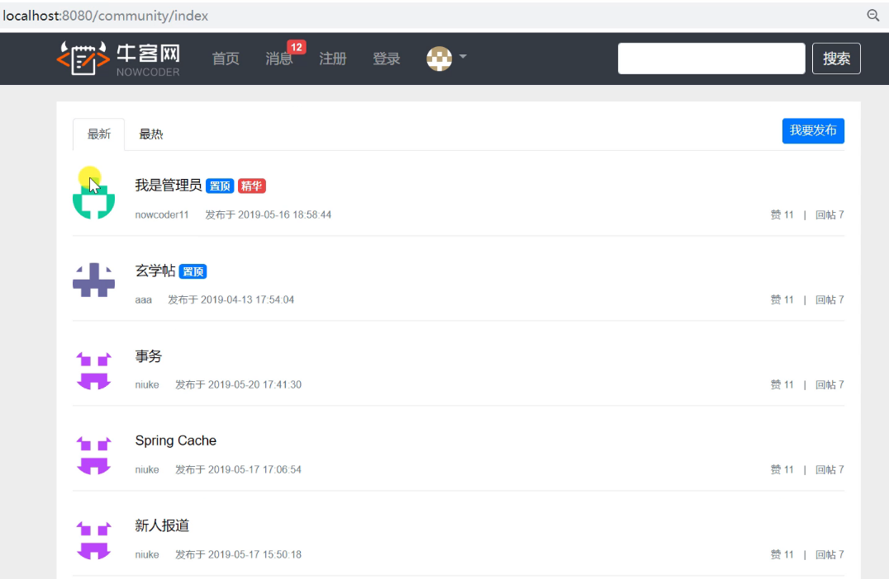

需求介绍—社区首页
根据之前的学习，我们一般都是先按照DAO->Service->Controller这个顺序去开发
分布实现：
开发社区首页，显示前十个帖子。
开发分页组件，分页显示所有的帖子
代码实现
首先我们要知道贴子我们是放在discuss_post这个表里面，所以我们的操作都是根据这个表来操作。
那第一步来写一下DiscussPost实体类对应这个表里面的字段。
1 | package com.nowcoder.community.entity; |
那么我们对应去开发DiscussPostMapper，完成对应对于这个数据库操作的函数声明。
1 | package com.nowcoder.community.dao; |
那么函数声明了，就要去discusspost-mapper.xml文件里面写实现的了
1 | <?xml version="1.0" encoding="UTF-8" ?> |
至此数据访问层就开发完了，那么要继续开发业务组件DiscussPostService。
1 | package com.nowcoder.community.service; |
但是现在有个问题就是在平时的时候我们在页面上显示的肯定都是显示username而不是userId所以我们需要写个方法把两者关联起来，因为这个只涉及到User那么我们可以对写UserService对其进行操作
1 | package com.nowcoder.community.service; |
那么至此业务层的逻辑我们就写完了，现在就开始写表现层DiscussController：
我们先查前10条的帖子
1 | package com.nowcoder.community.controller; |
然后就是处理对应的页面，我这里就不写了，基本的功能点在这了，运行之后可以查到表里面的前十条数据如下图所示：

现在就继续完善分页的功能，那么现在客户端要给服务端除了之前传递的数据还要传递现在是第几页这些其他的信息，服务端也需要根据传来的信息确定这个页码是否超过了能有的最大的页码（可以根据数据库中帖子的数量很分页每页显示多少条来计算得到），因为这个数据传递的很频繁所以我们单独写个组件来实现。
那么我们先实现Page来确定分页的一些条件
1 | package com.nowcoder.community.entity; |
那么要改造HomeController来实现分页：
1 | package com.nowcoder.community.controller; |
那么还要在页面上动态的配置好对应的链接
1 | <nav class="mt-5" th:if="${page.rows>0}" th:fragment="pagination"> |
那么至此分页的功能点就写完了，经测试功能正常，首页能正常测试